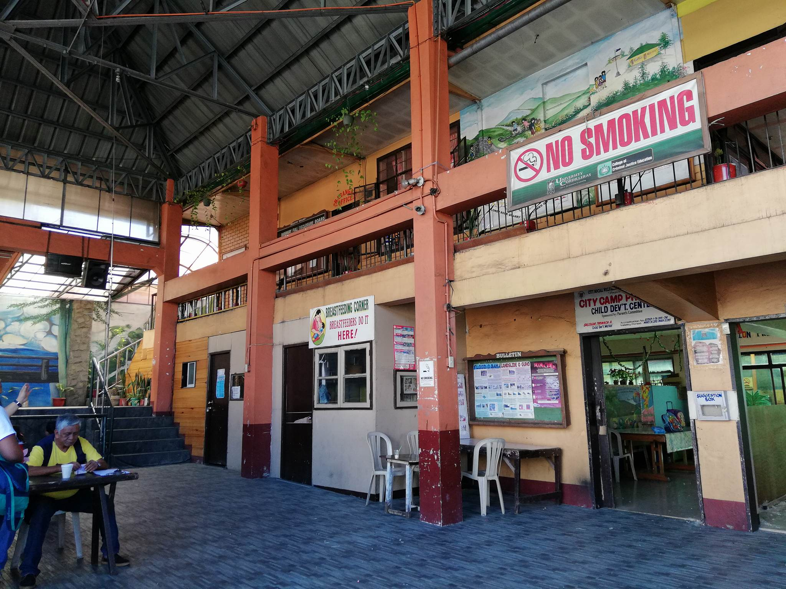
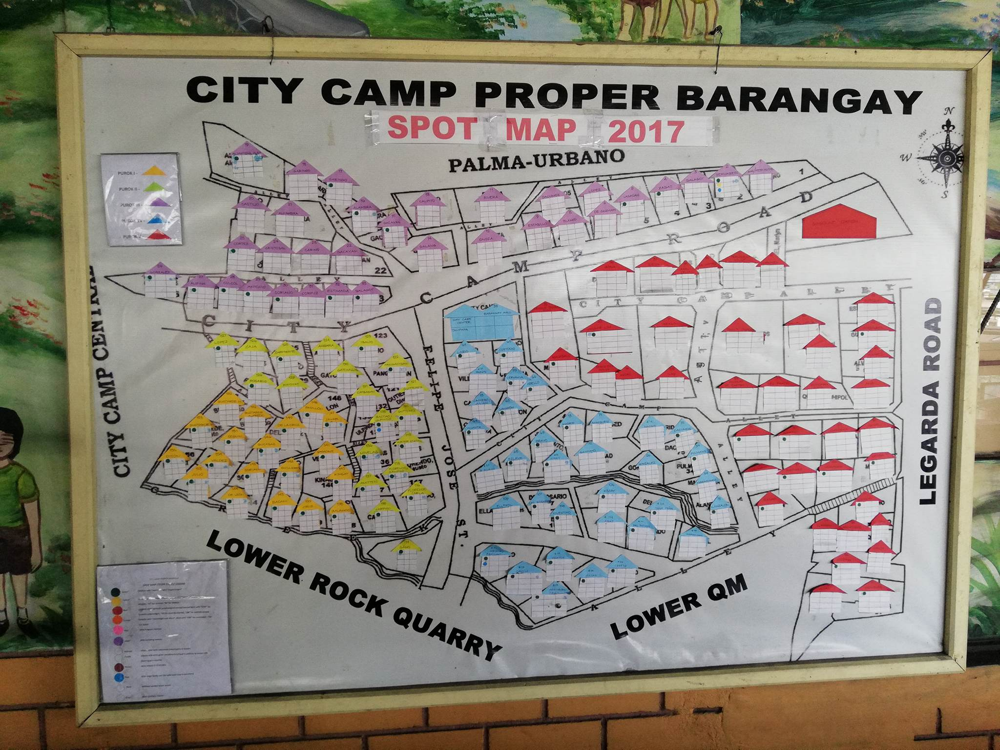
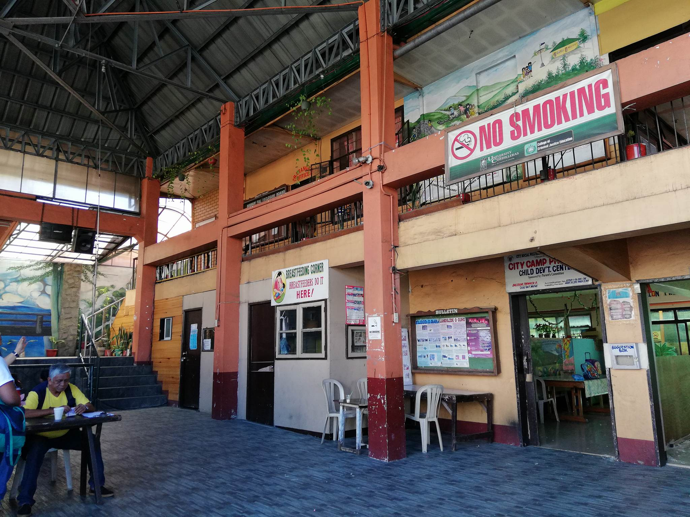
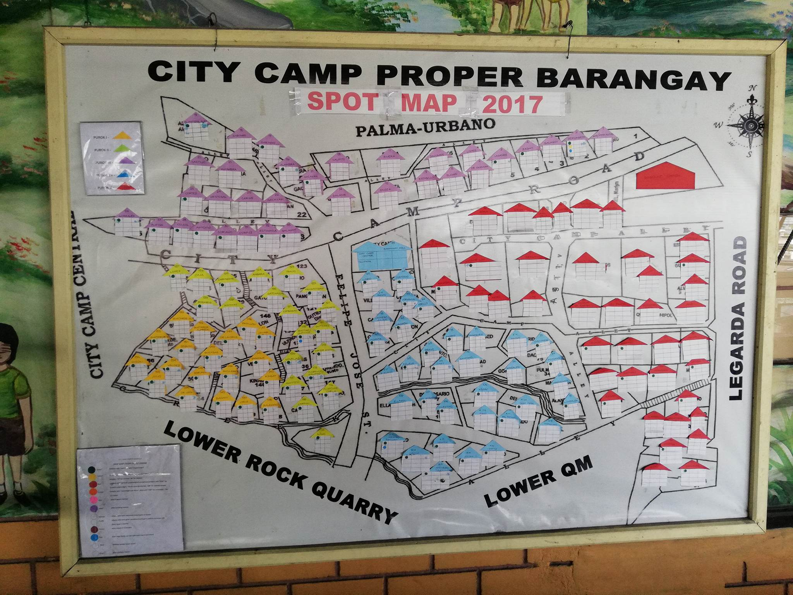

Good Governance is a concept/model for decision-makings. The purpose is to plan and make policies, implemented or not, that will benefit the community.
It does not only focus on what the committees have talked about during their agenda but also to hear and consider the suggestions, recommendations from the community.
It is not bias whereby community will benefit from them not by selected people.It must be balance where the community and the municipality are able to contribute and follow the policies and this decisions focuses not only for their constituents but for the entire community as well.
How decions are made.
 


